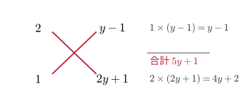

例題 1数と式 2文字の2次式（たすき掛け）
次の式を因数分解せよ。\[2x^2+5xy+2y^2+x-y-1\]
解き方（まず考え方）
文字が2つあるときは、1つの文字（ここでは \(x\)）について降べきの順に整理する。もう1つの文字 \(y\) は数のように扱う。すると \(x\) の2次式になり、たすき掛けが使える。
コツまず「文字を1つにしぼる」。2文字のまま悩まず、片方を数だと思って普通の2次式として解く。
解答
STEP 1 \(x\) について降べきの順に整理する
\(y\) を数と同じように扱い、\(x^2\)、\(x\)、\(x\) を含まない項に分ける。
\[2x^2+5xy+2y^2+x-y-1=2x^2+(5y+1)x+(2y^2-y-1)\]STEP 2 定数項（\(x\) を含まない部分）を因数分解する
\[2y^2-y-1=(y-1)(2y+1)\]
確かめ：
\[(y-1)(2y+1)=2y^2+y-2y-1=2y^2-y-1\]STEP 3 たすき掛けをする（図）

左の列は \(2,\ 1\)、右の列は \(y-1,\ 2y+1\)。たすきにかけて足すと、
\[2\cdot(2y+1)+1\cdot(y-1)=4y+2+y-1=5y+1\]これは \(x\) の係数と一致するので、たすき掛けは成功。
STEP 4 かっこにまとめる
\[2x^2+5xy+2y^2+x-y-1=(2x+y-1)(x+2y+1)\]
【答案（テストに書く形）】
\[(2x+y-1)(x+2y+1)\]答
練習問題 1
- \(3x^2+7xy+2y^2-x+3y-2\)
- \(2x^2+5xy-3y^2-x+11y-6\)
- \(3x^2+5xy-2y^2+x-5y-2\)